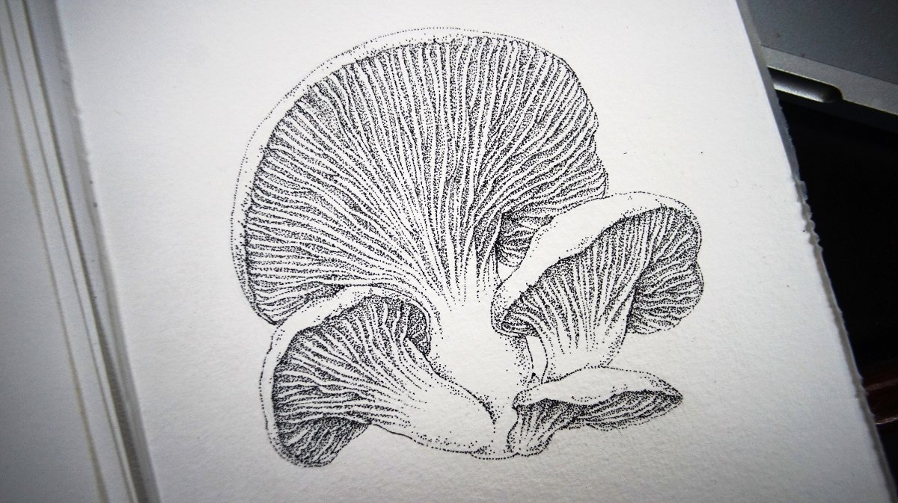
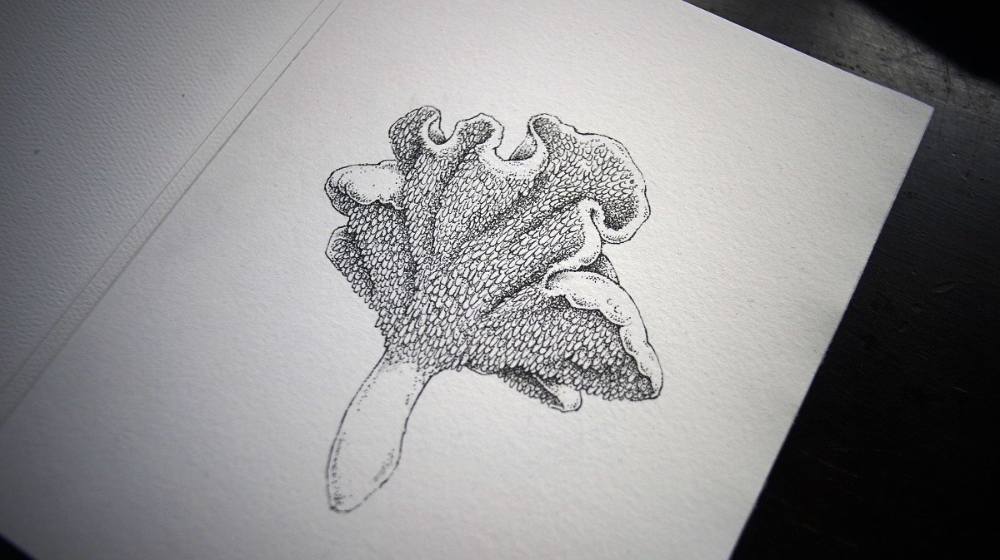
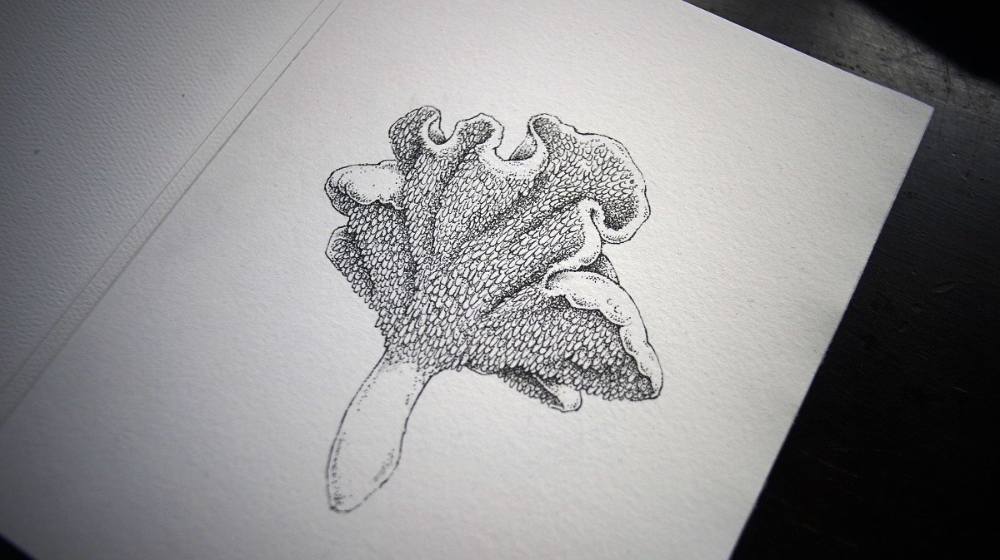

Vancouver Island mushroom series
British Columbia is home to many wonderful mushrooms. Vancouver Island in particular, is a great location for learning about and foraging mushrooms. I made this series to learn about local varieties, and also because I love getting lost into their details.
I started this series in December 2021.
Each drawing are 148x210mm (6x8inches) ink drawings. I will put them up for sale in the store once the series is complete.
 
